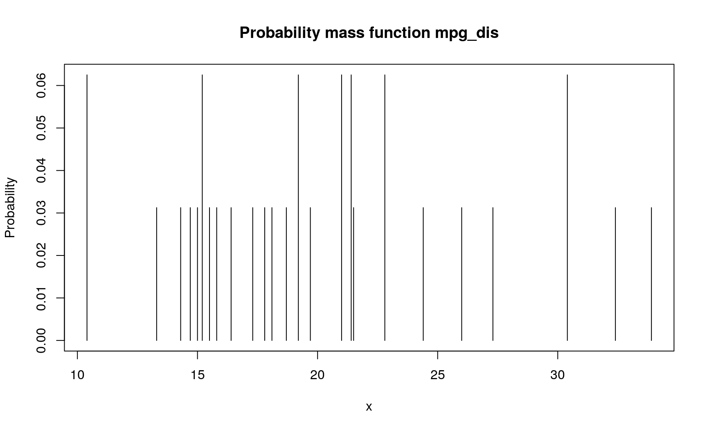
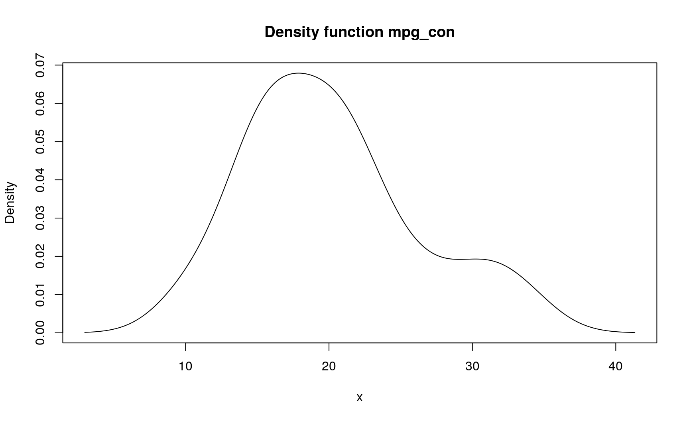
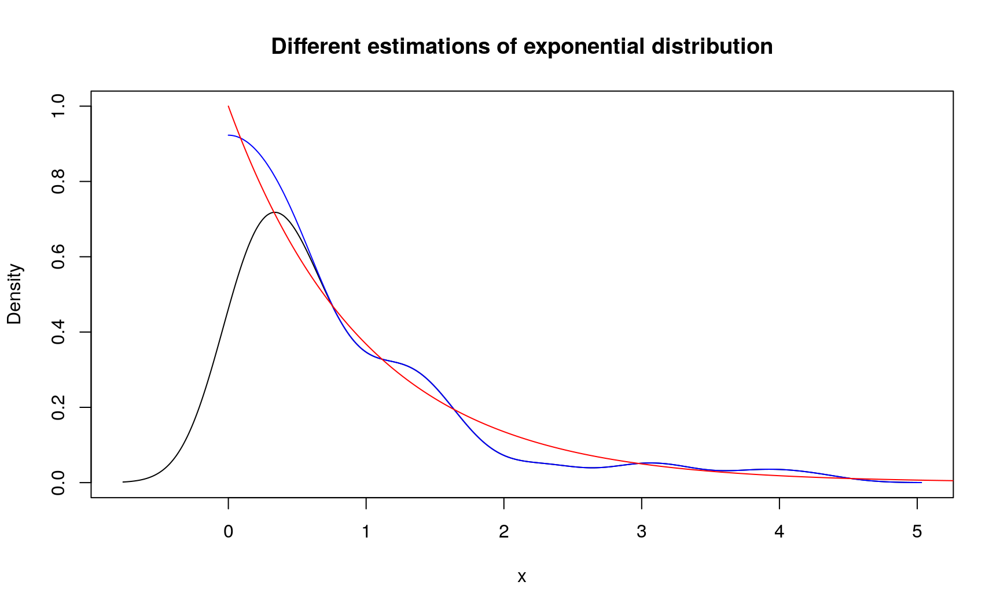
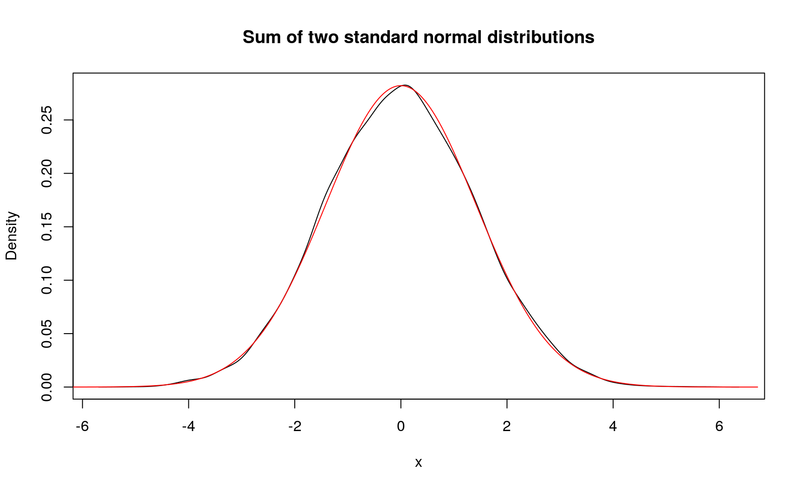
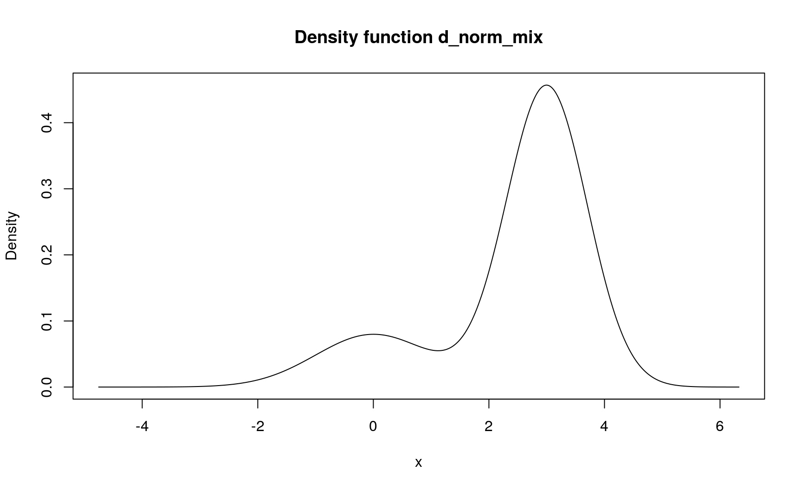
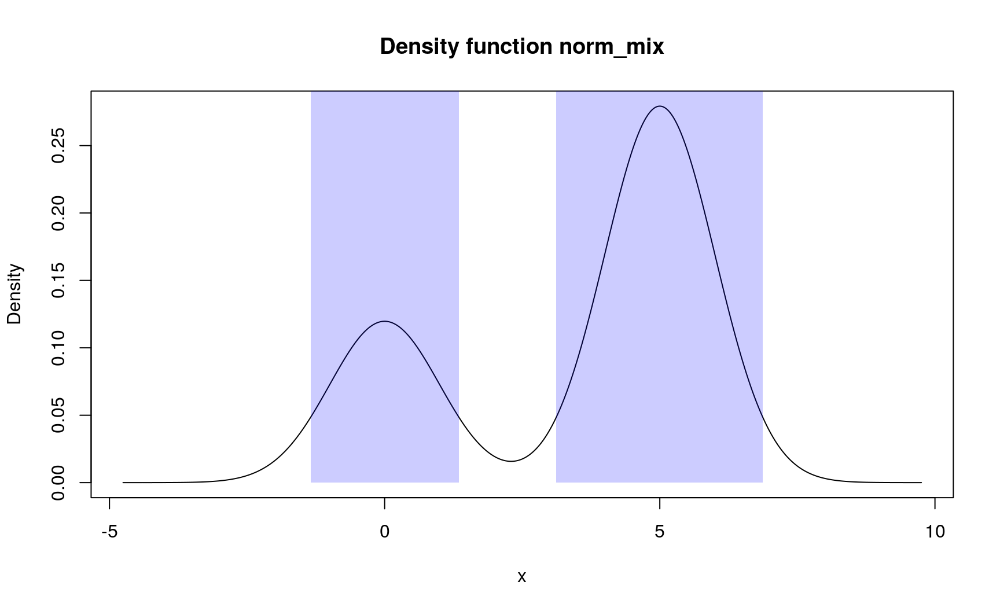

Announcing pdqr
Prologue
I have been working on ‘pdqr’ package for quite some time now. Initially it was intended only for creating custom distribution functions (analogues of base “p”, “d”, “q”, and “r” functions) from numeric sample. However, after couple of breakthrough ideas, it also became a set of tools for transforming and summarizing distributions.
Now I would like to make it public with hope to get any feedback about the package: its general design, function and argument names, numerical issues, etc. Please, feel free to tweet your thoughts (preferably with #pdqr hashtag). If you have any suggestions or found a bug, don’t hesitate to create an issue.
This announcement post will be in form of a short cookbook for most common distribution problems, preceding with a little intro to package core structure. For more details go to these resources:
- Package README contains more thorough overview of package structure.
- Vignettes represent deeper dive into package’s main families of functions.
We’ll need the following setup:
# Currently can only be installed from Github
library(pdqr)
library(magrittr)
# Make reproducible randomness
set.seed(101)Package overview
The main structure unit of the package is pdqr-function: an actual function which represents distribution with finite support and finite values of probability/density. Distributions with infinite support and/or density are approximated.
Two types of distributions are supported, which will be called pdqr types:
- Type “discrete”: random variable has finite number of output values. Pdqr-function is explicitly defined by the collection of its values with their corresponding probabilities. Usually used when underlying distribution is discrete (even if in theory there are infinite number of output values).
- Type “continuous”: random variable has infinite number of output values in the form of continuous random variable. It is explicitly defined by piecewise-linear density function with finite support and values. Usually used when underlying distribution is continuous (even if in theory it has infinite support and/or density values).
Pdqr-function can represent distribution in 4 different ways which resemble base R design. These ways are determined by its pdqr class:
- P-function (pdqr-functions of class “p”) returns value of cumulative distribution function (probability of random variable being not more than certain value) at points
q(its numeric vector input). - D-function returns value of probability mass or density function (depending on pdqr type) at points
x(its numeric vector input). - Q-function returns value of quantile function at points
p(its numeric vector input). - R-function generates random sample of size
n(its single number input) from distribution.
Package ‘pdqr’ has the following main families of functions:
- new_*() functions for creating pdqr-functions of specific class.
- as_*() functions for changing class of pdqr-functions.
- form_*() functions for transforming pdqr-functions and underlying distributions. Transformations also can be done with common base mathematical operations, like
+,*,exp,>etc. - summ_*() functions for summarizing distributions.
- region_*() functions to work with special type of summary called “region”.
Note that implemented approaches often emphasize approximate and numerical solutions:
- All distributions assume finite support (output values are bounded from below and above) and finite values of density function (density function in case of “continuous” type can’t go to infinity).
- Some methods implemented with simulation techniques.
Custom distributions
Estimate distribution from sample
Problem Create a pdqr-function representing an estimation of sample’s distribution.
Solution The most important decision here is about distribution’s type: discrete or continuous. In first case, any new_*() function will use unique values of sample as distribution’s outcomes, and probabilities will be estimated by tabulating and normalizing:
# Any pdqr class can be used to represent distribution
mpg_dis <- new_d(mtcars$mpg, type = "discrete")
# Pdqr-functions have `print()` methods with concise summary
mpg_dis
## Probability mass function of discrete type
## Support: [10.4, 33.9] (25 elements)
# To visually inspect pdqr-function, use `plot()`
plot(mpg_dis)For continuous type, density() function will be used to estimate distribution’s density (if sample has 2 or more elements). Note that arguments of density() will affect greatly the output distribution (as always with kernel density estimation).
mpg_con <- new_d(mtcars$mpg, type = "continuous")
mpg_con
## Density function of continuous type
## Support: ~[2.96996, 41.33004] (511 intervals)
plot(mpg_con)
These newly created functions can be used to obtain probability or density of any point:
# Probabilities
mpg_dis(20:25)
## [1] 0.0000 0.0625 0.0000 0.0000 0.0000 0.0000
# Density values
mpg_con(20:25)
## [1] 0.06469730 0.06040205 0.05394401 0.04591992 0.03759639 0.03029240
Estimate distribution of positive values
Problem Create a pdqr-function representing an estimation of sample’s distribution with assumption that it can produce only positive values.
Solution This common task is done in two steps:
- Estimate sample distribution, as in previous step. It can result into unwanted distribution properties, like producing negative values. This is a known issue of boundary problem in kernel density estimation.
- Modify distribution to have only positive support with form_resupport(). It has several methods with default one (
"reflect") recommended to deal with boundary correction. It “reflects” density tails “inside” of a desired support interval. Its output for bounded distributions is usually a closer estimation of “true distribution”.
# Exponential distribution can have only positive values
exp_sample <- rexp(100)
d_exp <- new_d(exp_sample, type = "continuous")
# Use `NA` to indicate that certain edge of support should remain unchanged
d_exp_corr <- form_resupport(d_exp, support = c(0, NA))
# Original kernel density estimation
plot(
d_exp, main = "Different estimations of exponential distribution",
ylim = c(0, 1)
)
# Corrected density
lines(d_exp_corr, col = "blue")
# Reference distribution
lines(seq(0, 6, by = 0.01), dexp(seq(0, 6, by = 0.01)), col = "red")
Generate sample similar to input
Problem Generate sample of certain size from distribution that is an estimate to original sample’s distribution.
Solution R-functions are used for generating samples. There are two ways of creating them:
# Create new r-function from sample
r_mpg_dis <- new_r(mtcars$mpg, type = "discrete")
r_mpg_dis(n = 10)
## [1] 15.2 15.2 10.4 16.4 15.5 30.4 18.1 21.5 30.4 15.2
# Convert existing pdqr-function to be r-function
r_mpg_con <- as_r(mpg_con)
r_mpg_con(n = 10)
## [1] 18.68990 20.91834 20.22863 15.94346 15.12797 35.04418 12.48795
## [8] 28.79146 15.24957 24.35035Common distributions
Compute sum of random variables
Problem Compute pdqr-function representing sum of two independent random variables (for example, both being standard normal distributions).
Solution First, you need to create pdqr-functions for random variables. Here standard normal distribution will be used. This can be done by converting base R distribution functions to be pdqr-functions. After that, using + gives distribution of sum of two random variables:
(d_norm <- as_d(dnorm))
## Density function of continuous type
## Support: ~[-4.75342, 4.75342] (10000 intervals)
(d_norm_sum <- d_norm + d_norm)
## Density function of continuous type
## Support: ~[-5.69484, 6.37105] (511 intervals)
plot(d_norm_sum, main = "Sum of two standard normal distributions")
# "True" sum of two independent normal random variables
lines(as_d(dnorm, sd = sqrt(2)), col = "red")
Here you can see two very important features of ‘pdqr’:
- Normal distribution is approximated with piecewise-linear density on finite support (10000 intervals are used by default).
- Distribution of sum of random variables is computed with simulation: large samples are drawn from both distributions, sums of their values are computed (resulting in a sample from sum of random variables), and target distribution is created using one of
new_*()functions.
Compute mixture
Problem Compute mixture of distributions with different weights.
Solution Specifically for this task, there is a form_mix() function. It takes a list of pdqr-functions with, possibly, a vector of their weights in mixture:
d_norm_list <- list(as_d(dnorm), as_d(dnorm, mean = 3, sd = 0.7))
(d_norm_mix <- form_mix(d_norm_list, weights = c(0.2, 0.8)))
## Density function of continuous type
## Support: ~[-4.75342, 6.3274] (20003 intervals)
plot(d_norm_mix)
# As with other pdqr-functions, it can be used for obtaining values
d_norm_mix(seq(-1, 1, by = 0.2))
## [1] 0.04839424 0.05793842 0.06664505 0.07365417 0.07822190 0.07983544
## [7] 0.07836164 0.07411459 0.06792242 0.06120445 0.05609038Summaries
Usual workflow for computing summaries is as follows:
- Estimate all necessary distributions by creating pdqr-functions.
- Make transformations appropriate for summary, which will result into one distribution.
- Compute summary of distribution.
Notes:
- Although this approach is very flexible in terms of computed summaries, it doesn’t take care of possible bias when estimating from a sample.
- When initially dealing with one distribution, this task can be conveniently written with magrittr’s pipe operator
%>%.
Compute winsorized sample mean
Problem Compute 10% winsorized sample mean.
Solution This can be done by purposefully separating task into three steps:
- Estimate sample distribution. It can have any type, depending on problem. Type “discrete” is better suited to emulate traditional sample estimates.
- Transform distribution by winsorizing tails. There is a form_tails() functions, which takes pdqr-function and returns pdqr-function for distribution with modified tails (based on supplied method).
- Compute mean of winsorized distribution. Note that in case of other statistic (like variance, skewness, etc.) no bias correction is done: output is a summary of distribution created on previous step(s).
mtcars$mpg %>%
new_d(type = "discrete") %>%
form_tails(level = 0.1, method = "winsor", direction = "both") %>%
summ_mean()
## [1] 20.19375Compute mode
Problem Compute mode of distribution based on its sample.
Solution Use summ_mode():
mtcars$mpg %>%
# Using "continuous" type will smooth input to get mode of density curve.
# With type "discrete" the most frequent input value is returned.
new_d(type = "continuous") %>%
summ_mode()
## [1] 17.90862Compute highest density region
Problem Compute 90% highest density region (HDR) of a distribution.
Solution There is a summ_hdr() function for this task. On a one dimensional line, HDR can only be a union of disjoint intervals. So the output of summ_hdr() is a region - data frame with rows representing different intervals of the union and two columns “left” and “right” for left and right ends of intervals.
norm_mix <- form_mix(
list(as_d(dnorm), as_d(dnorm, mean = 5)),
weights = c(0.3, 0.7)
)
(norm_mix_hdr <- summ_hdr(norm_mix, level = 0.9))
## left right
## 1 -1.342624 1.348071
## 2 3.119697 6.870090There is a region_*() family of functions to work with regions. Here are several examples:
# Test if number is inside region
region_is_in(norm_mix_hdr, x = c(-10, 0, 3, 10))
## [1] FALSE TRUE FALSE FALSE
# Compute region width (sum of widths of all disjoint intervals)
region_width(norm_mix_hdr)
## [1] 6.441087
# Draw regions
plot(norm_mix)
region_draw(norm_mix_hdr)
Compute separation threshold
Problem Compute a numerical threshold that optimally separates two distributions.
Solution There is a summ_separation() function designed specifically for this type of problem. It has several methods with default one being “KS” (short for “Kolmogorov-Smirnov”): optimal separation is done at point where two CDFs differ the most.
x <- rnorm(100)
y <- rnorm(100, mean = 2)
# Here "true optimal" is 1
summ_separation(f = new_d(x, "continuous"), g = new_d(y, "continuous"))
## [1] 0.9763479Compute probability of being greater
Problem Compute a probability that random draw from one distribution is greater than random draw from another distribution.
Solution These type of summaries are usually done in two steps:
- Compute a boolean pdqr-function that represents a result of comparison between mentioned two random draws. It is a special kind of discrete distribution: it only has values 0 and 1 representing estimated relation being false and true respectively. Usually, they are the output of base R comparison operators: >, <, ==, etc.
- Extract a probability of a relation being true.
d_norm <- as_d(dnorm)
d_unif <- as_d(dunif)
# The output of `>` is a boolean pdqr-function. For convenience, printing
# displays also a probability of 1, which is a probability of relation being
# true. In this case, it should be read as "probability that random draw from
# first distribution is greater than a random draw from second one".
(norm_geq_unif <- d_norm > d_unif)
## Probability mass function of discrete type
## Support: [0, 1] (2 elements, probability of 1: ~0.31563)
# Extract desired probability
summ_prob_true(norm_geq_unif)
## [1] 0.3156265Compute distance between distributions
Problem Compute distance between two distributions: positive value indicating “how far” two distributions are from each other. This is usually needed when comparing random outcomes of two (or more) options.
Solution There is a summ_distance() function with many methods.
# Default method is "KS" (short for "Kolmogorov-Smirnov"): the biggest
# absolute difference between two CDFs
summ_distance(d_norm, d_unif, method = "KS")
## [1] 0.5
# There is also "wass" method (short for "Wasserstein"): average path density
# point should go while transforming from one into another
summ_distance(d_norm, d_unif, method = "wass")
## [1] 0.7006094Epilogue
- Package ‘pdqr’ provides many tools for working with custom distribution functions.
- Consider using this package for solving your practical problems. Please feel free to share your feedback, ideas, and suggestions.
## R version 3.6.1 (2019-07-05)
## Platform: x86_64-pc-linux-gnu (64-bit)
## Running under: Ubuntu 18.04.2 LTS
##
## Matrix products: default
## BLAS: /usr/lib/x86_64-linux-gnu/openblas/libblas.so.3
## LAPACK: /usr/lib/x86_64-linux-gnu/libopenblasp-r0.2.20.so
##
## locale:
## [1] LC_CTYPE=ru_UA.UTF-8 LC_NUMERIC=C
## [3] LC_TIME=ru_UA.UTF-8 LC_COLLATE=ru_UA.UTF-8
## [5] LC_MONETARY=ru_UA.UTF-8 LC_MESSAGES=ru_UA.UTF-8
## [7] LC_PAPER=ru_UA.UTF-8 LC_NAME=C
## [9] LC_ADDRESS=C LC_TELEPHONE=C
## [11] LC_MEASUREMENT=ru_UA.UTF-8 LC_IDENTIFICATION=C
##
## attached base packages:
## [1] stats graphics grDevices utils datasets methods base
##
## other attached packages:
## [1] magrittr_1.5 pdqr_0.1.0.9000
##
## loaded via a namespace (and not attached):
## [1] Rcpp_1.0.1 bookdown_0.11 crayon_1.3.4 digest_0.6.19
## [5] evaluate_0.14 blogdown_0.12 pillar_1.4.1 rlang_0.3.4
## [9] stringi_1.4.3 rmarkdown_1.13 tools_3.6.1 stringr_1.4.0
## [13] xfun_0.7 yaml_2.2.0 compiler_3.6.1 htmltools_0.3.6
## [17] knitr_1.23